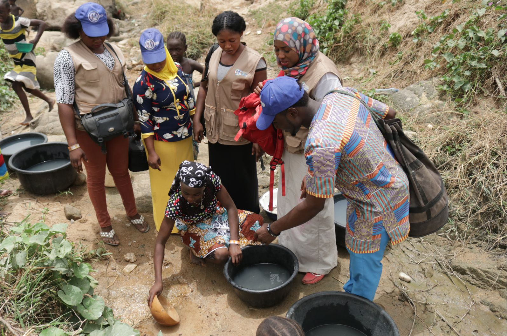

Menstrual health isn't just a 'women's issue'. That's why HMI is getting boys and men involved to talk openly about menstrual health. Giving menstrual hygiene management the attention it truly deserves has a multiplying effect on families, communities and countries. When women and girls are healthy, everyone benefits.
In 2012, UN Secretary General Ban Ki-moon said that 'the greatest return comes from investing in girls and women.
When empowered, educated and healthy, they drive development in their families, communities and nations. However,
without access to necessities like functional toilets, sanitation facilities, menstrual pads and information, girls and women are
unable to be the drivers of development they have the potential to be.
While many governments and non-governmental organizations support several issues affecting girls and women in developing countries, menstrual hygiene management often gets overlooked. Millions of girls in sub-Saharan Africa do not attend school due to taboos and stigma related to menstruation. They do not have access to proper sanitary pads and instead they resort to unhygienic alternatives to manage menstruation such as using rags, newspapers and leaves. These offer no protection and may be susceptible to the growth of bacteria that could lead to infections and long-term implications for reproductive health.
Aside from the health risk factors, the alternative materials are also ineffective and humiliating, often resulting in blood-stained uniforms leading to bullying from particularly male peers. Many girls are forced to skip school during their menstruation days to avoid been stigmatized and loss of dignity. In some cases, girls engage in transactional sex so that they can raise the money they need to buy sanitary towels, putting them at the risk of HIV and STI infection. When an adolescent girl is absent from school due to menstruation issues for five days in a month, she loses 40 learning classes, equivalent to approximately 400 (Four Hundred) learning classes in every school term, which is great loss and very alarming.
Menstruation to a large extent, is a private matter. The emotional and psychological trauma associated with it is not always voiced out and rarely make the news headlines. Therefore, the need to prioritize menstrual hygiene interventions for adolescent girls and young women in poorest, rural, underserved and vulnerable communities is crucial. HMI is in the vanguard of providing packages of menstrual health education to increase awareness among adolescent girls and young women and free distribution of sanitary pads to enable them gain control over their menstruation, improve menstrual hygiene, install dignity, build self-esteem and empower them for greater socialization.
Water, Sanitation and Hygiene (WASH) are essential for women and adolescent girls to thrive, they play a large role in their lives, both biologically and socially. Lack of adequate WASH facilities in place has been linked to improper management of menstrual hygiene, which is having a deleterious impact on women and girl sexual and reproductive health, girl's education and dignity. Lack of proper and adequate sanitation facilities installed like toilets doesn't guarantee the necessary privacy that women and girls deserve during menstruation, thereby hindering them from managing their menstruation safely, hygienically and with dignity.

HMI is working towards integrating efforts between WASH, education and reproductive health matters to further address issues like girls absenteeism from school, gender inequality and poverty alleviation.
HMI is in the vanguard of exploring innovative ways to access clean and portable water, basic toilet infrastructures in schools and public places and promoting good hygienic practices including hand washing with soap and clean running water.